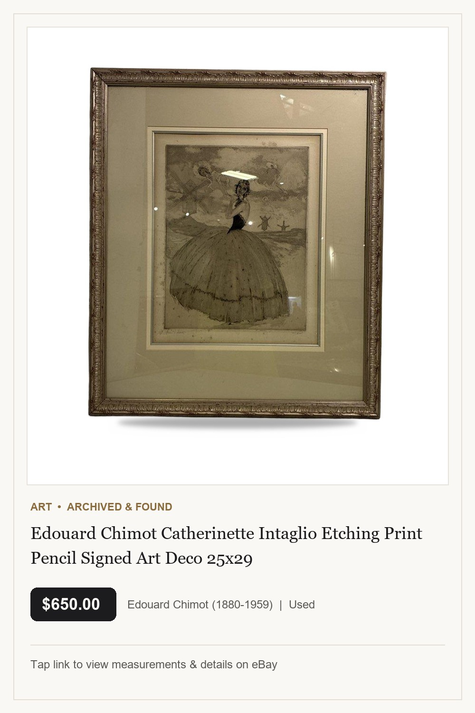
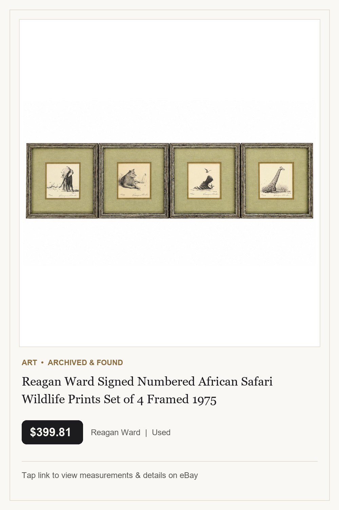
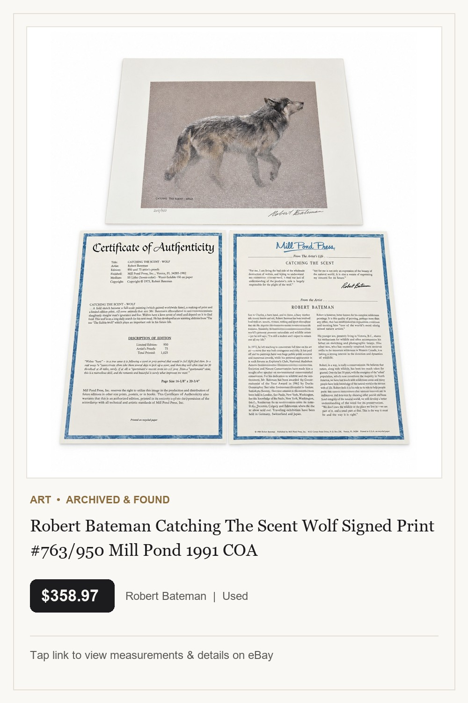
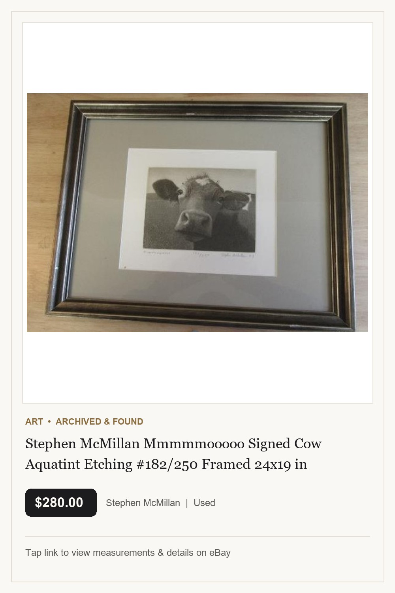

In Stock • Verified eBay ArchiveEdouard Chimot Catherinette Intaglio Etching Print Pencil Signed Art Deco 25x29
$650.00 USD
- Brand: Edouard Chimot (1880-1959)
- Condition: Used
- Size: Large (25 in x 29 in Framed)
- Material: Intaglio Ink on Wove Paper (Papier Velin), Carved Wood Frame, Glass
- Origin: France
Edouard Chimot Catherinette Intaglio Etching Print Pencil Signed Art Deco 25x29. Brand: Edouard Chimot (1880-1959) • Condition: Used • Size: Large (25 in x 29 in Framed) • Material: Intaglio Ink on Wove Paper (Papier Velin), Carved Wood Frame, Glass • $650.00. Available via archivedandfound on eBay. #FineArt #SignedPrints
Shop This Piece on eBay → Browse Art Prints
Related Curated Pieces

$399.81Reagan Ward Signed Numbered African Safari Wildlife Prints Set of

$358.97Robert Bateman Catching The Scent Wolf Signed Print #763/950 Mill

$279.00Robert Bateman Chipmunk Signed Limited Edition Print #319/950 Fra

$280.00Stephen McMillan Mmmmmooooo Signed Cow Aquatint Etching #182/250